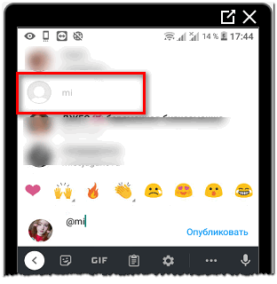
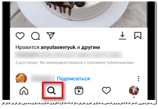
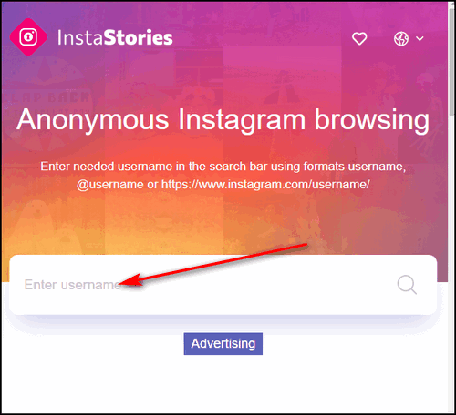
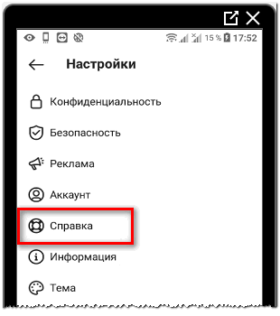
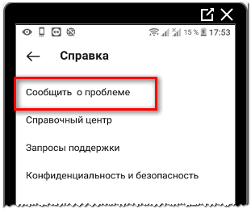
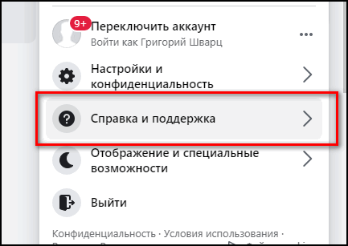
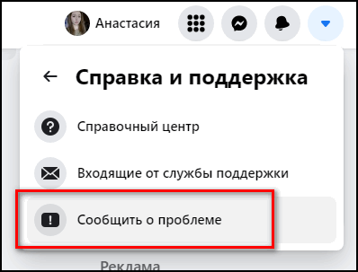

Как узнать что тебя заблокировал человек в Инстаграме

Узнать, что тебя заблокировали в Инстаграме* не так трудно. Страница этого человека не отображается в поиске, от него не приходят комментарии и отсутствуют публикации. Если это бывший подписчик, то он автоматически удаляется из перечня друзей.
Виды блокировок в Инстаграме*
В социальной сети есть несколько типов блокировок, которые входят в 2 основные и отдельные подгруппы:
| От другого пользователя | |
| Полная блокировка | Исчезает из поиска, недоступны публикации, Stories, комментарии и в профиле нет аватарки. |
| Ограничение действий | Недоступны либо комментарии, либо Истории. Нельзя отправить сообщение. |
| Скрыл из интересных страниц | Не влияет на других пользователей |
И вторая группа, которая относится к технической:
| От администрации | |
| Блокировка отдельной функции | Нельзя писать комментарии/отправить сообщение/ поставить лайк |
| Полная блокировка страницы | Невозможно зайти в свой аккаунт, отсутствует при поиске |
| Теневой бан | Падает активность, публикации не появляются у подписчиков |
| Блокировка контента | Одна или несколько публикаций будут удалены, так как не отвечают правилам сообщества |
От посетителям могут скрыть Истории, запретить отправлять комментарии или сообщения. Определить возможно при следующей попытке выполнить это действие. На экране появится уведомление, где будет написано: «Действие заблокировано» или же «Вы не можете отправлять сообщения этому пользователю».
Блокировка от другого человека не влияет на функциональные возможности аккаунта. Не придет оповещений о «черном списке» ни заблокировавшему, ни тому, кто попал в этот перечень.
Если заблокировал другой пользователь
Понять, что тебя заблокировали в Инстаграме* возможно в том случае, если пользователь захочет отправить новое сообщение или комментарий. В последнем появится: «Этот человек запретил себя упоминать» или же его предыдущие отзывы будут удалены. Как определить, что добавили в «черный список» через комментарии:
- Перейти к публикации, где была переписка.
- Нажать по полю для ввода текста – поставить символ «@».

- Ввести первые буквы никнейма – если нужный не появился в списке, значит собеседник заблокировал.
Определить, что заблокировал кто-то из подписчиков:
- Зайти в свой профиль – Подписчики.
- Ввести никнейм – если Инстаграм* не находит, то перейти к глобальному поиску.
- Нажать снизу по значку в виде «лупы» - вписать ник.

- Посмотреть предложенные аккаунты.
Еще может случиться так, что пользователь не блокировал, а его страница удалена, либо он изменил никнейм. Если нет контактного номера телефона или другой социальной сети, где могла быть ссылка на Инстаграм* – проверить не получится.
Если скрыли Истории
Одна из распространенных форм блокировок – ограничение на просмотр Историй. Владелец аккаунта может либо создать список «Близких друзей» и размещать записи только для них, либо отдельно скрыть для определенного человека. Один из показателей, что Stories скрыты: владелец аккаунта раньше часто делился материалами, а потом резко перестал. Чтобы проверить, можно использовать онлайн-сервисы или создать вторую учетную запись. Как проверить через второй профиль:
- Зайти в Инстаграм* – Настройки.
- Закончить сеанс в своем профиле – перейти на главную.
- Зарегистрироваться – придумать новый никнейм, пароль, указать другие учетные данные.
- Создать страницу – перейти к глобальному поиску.
- Ввести никнейм человека – посмотреть последние публикации.
Воспользоваться сервисами для просмотра Историй:
- Перейти в InstaStories.online – ввести в строке поиска ник.

- Нажать: «Проверить» - подождать когда загрузятся Stories.
Но последний вариант не сработает, если страница защищена правами конфиденциальности, то есть «Закрытая» и чтобы посмотреть материалы нужно подписаться.
Причины блокировок в Инстаграме*
Причины личных блокировок – субъективный вопрос, который нужно рассматривать с точки зрения другого пользователя. Другие виды блокировок от администрации, зависят от действий владельца аккаунта и правил сообщества, которых нужно придерживаться. Почему страницы полностью блокируют или добавляют в «теневой бан»:
- автор использует чужие материалы. В основном, блокировку можно получить за музыку с авторским правом;
- материалы порнографического характера, неоднозначные сцены где участвуют несовершеннолетние;
- пропаганда табакокурения или алкоголя. Но это редкая причина для блокировок, учитывая магазины с такой продукцией в социальной сети;
- агрессивно-радикальные взгляды по национальному, расовому, гендерному признаку;
- преследование или травля другого пользователя;
- распространение материалов, которые могут навредить читателям блога. Медицины, альтернативная терапия.
Нужно более 10 жалоб, чтобы заблокировали Инстаграм* и администрация обратила внимание на действие пользователя. Некоторые материалы блокируются сразу, как нелегальное использование авторского права или порнографические публикации.
Заблокировала аккаунт администрация
Если владельцу страницы пришло уведомление по адресу электронной почты или войти не получается – значит его заблокировала администрация. В зависимости от причин блокировки, можно восстановить часть контента или полностью вернуть управление над учетной записью. В каких случаях вернут аккаунт:
- если автор смог доказать, что его страница не противоречит правилам сообщества;
- профиль был удален из-за взлома.
Но даже в этих случаях не всегда отвечает поддержка и помогает с восстановлением. Что делать, если страница заблокирована:
- Воспользоваться другой учетной запись – зайти в Инстаграм*.
- Настройки – Справка.

- Сообщить о проблеме – описать возникшую ситуацию, добавить скриншоты из Галереи.
- Отправить.

В течение 72-х часов администрация даст ответ. Но лучше заполнять графу с обращением на английском, потому что в этом случае ситуацию рассмотрят быстрее. При «теневой бане» важно не размещать публикаций в течение трех дней и стараться проявлять минимальную активность. Также, найти среди постов те, которые могли повлиять на блокировку. К примеру, если автор блога проводил Give Away, то записи с его упоминанием и станут причиной блока.
Как разблокировать свой Инстаграм*
Единственный вариант, как получить доступ к заблокированной странице – написать администрации. Но есть разные способы, как добавиться ответа, если заблокировали аккаунт в Инстаграме*. Через Facebook:
- Зайти в социальную сеть – нажать по значку рядом с аватаркой.
- Выбрать раздел: «Справка» - Сообщить о проблеме.

- Произошла ошибка – Категория: «Вход».
- Описать проблему и добавить скриншоты.

Так как Instagram* связан напрямую с Facebook* и является их продуктом – нет разницы где именно задать вопрос. Относительно Инстаграма* нужно писать на английском, чтобы быстрее получить помощь. Ответ, как и через основное приложение, придет в течение 72-х часов.